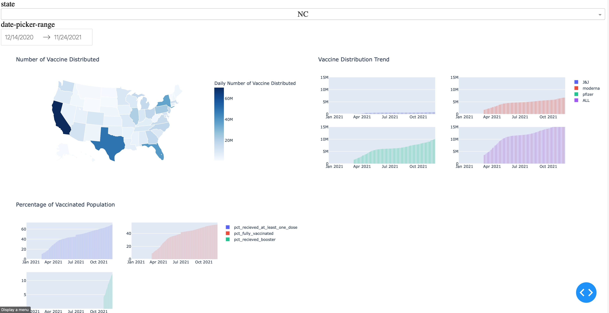
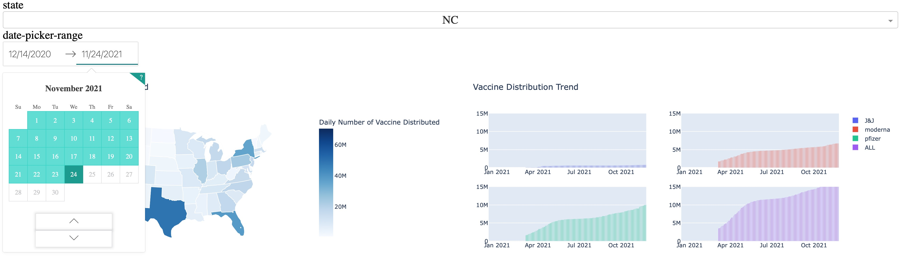
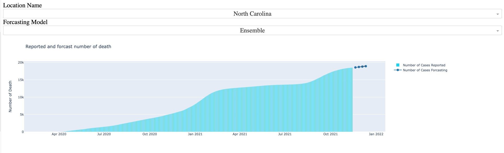
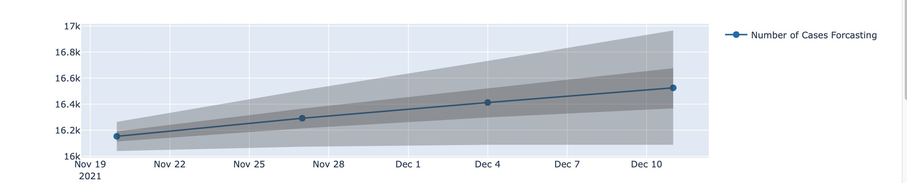
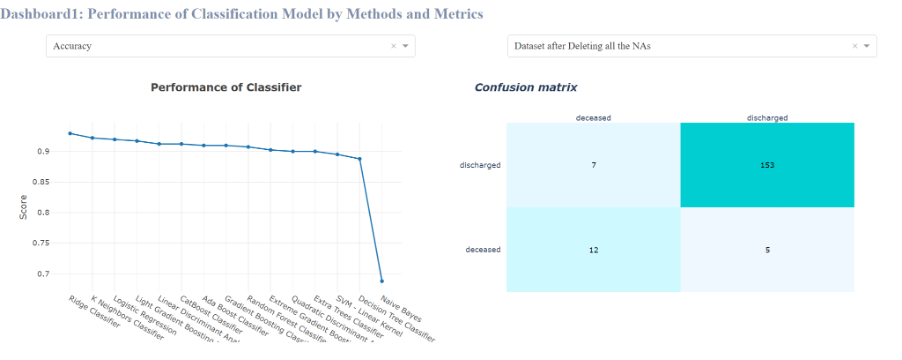
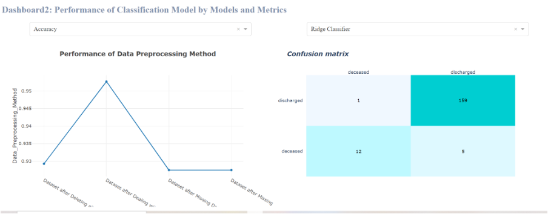
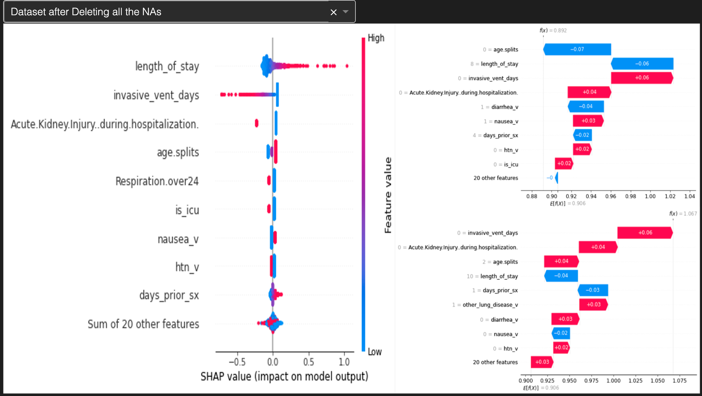

This blog introduces a dashboard we created which includes the information of COVID-19. Since people have different vulnerabilities to severe COVID-19 disease. The objective of our project is to identify the risk factors which are more likely to lead to mortality when COVID-19 is positive. In addition, the vaccination is also an important factor of mortality, but it is not included in our dataset. Thus, we collected further information of vaccinations and estimated deaths due to COVID-19.
This dashboard provides an overview of several essential aspects of the current COVID-19 situation:
- The first page visualizes the total number of vaccinations by state and by brand.
- The second page visualizes the estimated number of deaths due to COVID-19 within the next few weeks by state.
- The third page provides results and interpretation of machine learning models on predicting whether a COVID-19 positive patient will be discharged or deceased based on their characteristics.
It is designed for the consumers who are interested in knowing the estimated new deaths for the next few weeks and curious about which factors may contribute more to the deaths of COVID-19 positive patients. The usage of dashboard can make the information simpler and more intuitive to find and understand.
The First Page of the Dashboard:

The above screenshot is how the first page looks like.

The first part of this dashboard is to provide an overview idea of how the vaccinations are distributed for different timepoints. Therefore, by clicking the ‘Date Range Picker’ and the state, we can learn how the vaccinations are distributed among the states in the US until the selected date from the left-hand plot. The choice of states can give us the distribution trend and percentage of vaccinated population for the selected one.
The Second Page of the Dashboard:

The above screenshot is how the second page looks like. By selecting the state name and forecasting epidemic model, the reported and estimated number of deaths are shown.

This plot shows more detailed estimation of deaths for these following weeks.
The Third Page of the Dashboard:

The above screenshot is how the first part of the third page looks like. By clicking the dropdown menu of measurement metrics and the choice of dataset, the performance of each classifier and confusion matrix are plotted.

The above screenshot is how the second part of the third page looks like. By clicking the dropdown menu of measurement metrics and the choice of classifier methods, the performance of each data preprocessing method and confusion matrix are plotted.
The Fourth Page of the Dashboard:

The above screenshot is how the fourth page looks like. By clicking on the dropdown menu of data preprocessing methods, the explanations of the best model are plotted by using SHAP on the left-hand side. Meanwhile, the examples of two predictions and the explanations of their results are also plotted.
Therefore, the features of our dashboard is demonstrated. If you find this blog helpful, please feel free to contact me or bookmark this website. Thank you for reading